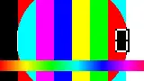

MP4 (H.264) + poster
MP4 (H.264), no poster
WebM (VP9) + poster
WebM (VP9), no poster
MP4 (H.264) #t=0.5 frame
WebM (VP9) #t=0.5 frame
MP4 autoplay muted + WebP poster
JPEG image

WebP image AVIF image
AVIF image lazy WebP (in view)
lazy WebP (in view) lazy JPEG (below the fold)
lazy JPEG (below the fold) IntersectionObserver WebP
IntersectionObserver WebP